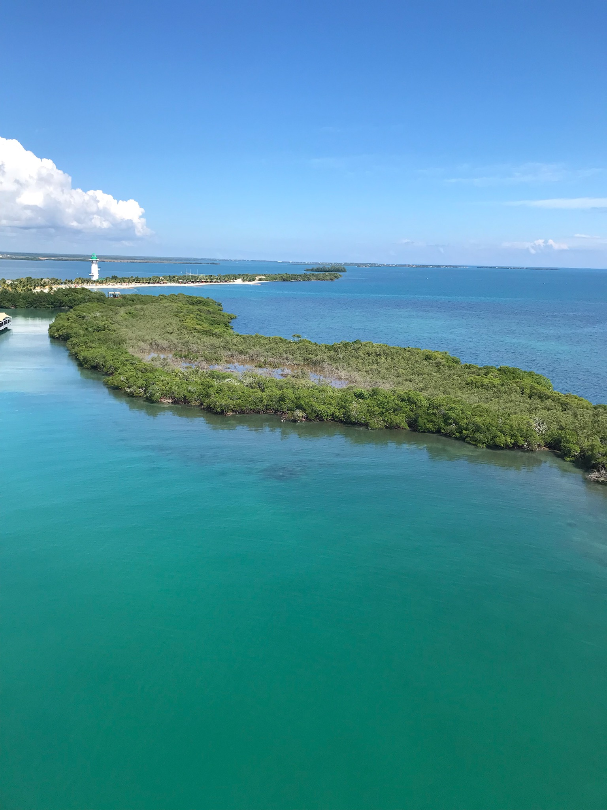

Joan Fry — a writer's life


My third book was How to Cook a Tapir: A Memoir of Belize (University of Nebraska Press, 2009). I had tried to write about my experience of living in the rainforest twice, first as nonfiction, but I was still too close to it. Then I tried to fictionalize it, and even I could tell it wasn’t working—it wasn’t my story anymore. With the encouragement of Pamela Malpas, who had agreed to represent Backyard Horsekeeping, I was finally able to put my story into context with the rest of my life. A paperback edition came out in 2012. When I was a sophomore at the University of Michigan, I married an anthropologist and went off on an extended honeymoon to British Honduras, now Belize. I was twenty years old and had no kitchen skills whatsoever. My husband and I lived in a bush house in Rio Blanco—thatch roof, dirt floor, no electricity, no plumbing. While he did fieldwork, I held down two jobs. One of them supported us both—the Bishop of British Honduras had hired me, a non-Catholic, to teach the Kekchi and Mopan Maya children their 3 Rs—reading, writing, and ‘rithmetic. My second job was harder. I did know how to boil water. I just didn’t know what to put in it that would magically turn it into a “meal.”
How to Cook a Tapir was honored with a “Best Book” award from Gourmand, the international food and wine society.
“Back in 1962, Joan Fry, an English major, was hungry for adventure. She married an anthropologist and followed him to what is now Belize, to a village deep in the rain forest for which nothing in her suburban New Jersey upbringing prepared her. She quickly learned that cooking was a survival skill … Fry grew up and out of her marriage (on her 21st birthday, she walked 20 miles for company because he was in the field). By the time she returned to his academic life in Ann Arbor, Mich., Fry was better suited for the independence she had found in the rain forest. A mature voice, almost 50 years later, marvels at her younger self.”——Susan Salter Reynolds, Los Angeles Times
“How to Cook a Tapir recounts the experience of Joan Fry, who accompanied her new husband to the rainforests of southern Belize for his dissertation fieldwork with Q’eqchi’ [also spelled Kekchi] and Mopan Maya people in the early 1960s. Fry served as a village schoolteacher while her husband did the standard ethnographic routine, but a good deal of her time was devoted to trying to be a good housewife, an enterprise doomed to fail … Her writing brings out the rich comedy of these moments very well. She vividly portrays the flavor of that strange moment just before the colony of British Honduras became the independent country of Belize. Most importantly, she is able to portray cultural difference, while at the same time introducing us to real individuals with whom she formed close personal relationships … In the end the book is great fun. It is hard not to think that she was not quite so submissive, nor her husband such a clod, but all the other characters are gently, fondly, and believably portrayed.” –Richard Wilk, Professor of Anthropology and Gender Studies, Indiana University.
How to Cook a Tapir is available through bookstores or online at barnesandnoble.com and amazon.com